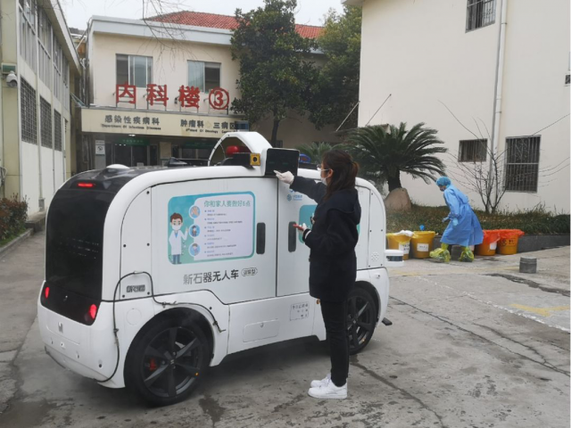
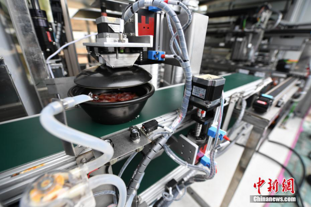

叶青武汉日记：把减下的数加回去
原文链接 备份链接 岛语 非常时期，武汉成了全国人民挂念、祈福的城市。封城后，武汉人民的真实生活是什么样？ 武汉在发生哪些变化？ 正和岛自1月26日起特别推出“叶青专栏”。叶青是一位定居武汉40年的市民，也是一名学者和官员。在过往多期的专 …
叶青武汉日记：中医局与卫健委可以平级吗？
 6259
6259
来源：正和岛
作者：叶青
03-05正在打榜，当前第1
[
砺石商业评论

砺石（北京）管理咨询有限公司 媒体
](https://archive.ph/o/hqFW9/mp.zhisland.com/wmp/user/personal/other/home?uid=6564052753339908099)
推荐人

1、全国累计死亡病例3012例
4日，周三。晴天。4日，全国新增确诊病例139例，新增死亡病例31例（湖北31例），新增疑似病例143例。截至4日，全国现有确诊病例25352例（其中重症病例5952例），累计治愈出院病例52045例，累计死亡病例3012例，累计报告确诊病例80409例，现有疑似病例522例。截至4日19时，山西、广东、江苏、新疆、四川、宁夏、浙江、黑龙江等8省份将疫情防控应急响应级别由一级调整为二级；甘肃、辽宁、贵州、云南、广西、内蒙古、青海、海南、陕西等9省份将疫情防控应急响应级别由一级调整为三级；福建、安徽、江西、吉林4省根据省内区域不同的风险程度，分区分级地进行精准防控。湖北新增确诊病例134例（武汉131例），新增治愈出院病例1923例（武汉1426例），新增死亡病例31例（武汉23例），现有确诊病例24085例（武汉21050例），其中重症病例5788例（武汉5342例）。累计治愈出院病例40479例（武汉26316例），累计死亡病例2902例（武汉2305例），累计确诊病例67466例（武汉49671例）。新增疑似病例67例（武汉61例），现有疑似病例315例（武汉247例）。全国的援鄂医疗队，也有了详细数字。

有一个数字值得一提。截至3日24时，16家重点整车集团主要生产基地开工率已达84.1％，员工复岗率达到66.5％，除重点疫区外，汽车行业企业基本实现复工复产。全国11家负压救护车重点企业已组织生产负压救护车1847辆，运抵湖北690辆。截至北京时间17时，中国境外共76个国家确诊新冠肺炎12668例，死亡共计214例。中国境外新增新冠肺炎2103例。韩国累计确诊病例达5186例。4日16时，韩国累计确诊病例已升至5621例。新增435例。当地时间4日伊朗新增新冠肺炎病例586例，新增死亡病例15例。截至当地时间4号中午，伊朗共确诊新冠肺炎病例2922例，其中552例康复，92例死亡。

2、我们不仅仅生产口罩
这次武汉抗疫，得益于举国体制的优势。短时期内，来了专家、物资，大规模地扩大生产，不能生产的进行国际采购。 3日，重点监测的企业共为湖北，主要是武汉，提供了大概6.5万台（套）医疗设备，其中无创呼吸机大概有1.4万台，有创的呼吸机2900余台，心电监护仪大概有1.5万余台，呼吸湿化治疗仪5000多台，血气分析仪500多台，血液透析机100多台，医用的正压呼吸器340余台，移动DR160台，空气消毒机1.5万余台。基本满足湖北前方防疫的需要。最近这段时间一共发往湖北67台ECMO。 通过各种渠道、各种途径，医用防护服生产企业压条机的保有量达到4300台。按单台每天能生产150件的生产效率来计算，我们能为防护服生产企业提供大概60万件的生产能力。 中国是防护服生产的大国，目前，防护服生产供应已经从紧缺到能够满足需求，每日协调保障湖北地区的防护服数量达到25万件，已经连续十几天超出湖北地区的需求。 政府部门也鼓励国内防护服的生产企业积极对接国外需求，按相应标准规范生产出口，为全球共同抗击疫情做出贡献。这也是企业发展的机遇。 湖北的生产潜力也得到了挖掘。 截至3月3日，湖北全省医用防护服、N95医用口罩、医用外科口罩日产量分别达10.95万件、28万只、238.5万只，分别是1月23日产量的38.8倍、7.8倍、6.2倍，自给率分别达到43.1%、50.03%、74.9%。 相关部门先后帮助200多家企业解决具体问题500多项。24个省直单位、37名特派员进驻首批37家企业，随着这批项目达到产能，有望大大增加主要医用物资供应。 据财政部的预计，企业的养老、失业、工伤三项社会保险阶段性降费实施以后，预计2020年可以减轻企业负担5100多亿元。再加上阶段性减免以单位方式参保的个体工商户职工养老、失业、工伤保险，阶段性减征职工基本医疗保险费单位缴费。今年仅社会保险费减负就会减轻企业负担超过1万亿元。???? 2020年的经济怎么振兴？“大基建”是不可少的。 目前，已有13个省市区发布了2020年重点项目投资计划清单，总投资额33.83万亿元。 在多地公布的重大项目投资清单中，与疫情相关的项目投资紧急扩容。 比如，江苏省安排了10个民生项目，年度计划投资958亿元，特别是为应对新冠病毒肺炎疫情，新增安排了南京市第二医院（省传染病医院）扩建等公共卫生项目。
3、武汉成立农村组
经专业调查，任城监狱疫情事件是由1月21日从武汉自驾车到达山东济宁的人员，传染给监狱干警、职工，进而造成部分干警和罪犯感染。 为此，山东省司法厅原厅长解维俊等11人被查，力度不低于湖北。 4日，陈一新在武汉指挥部指导督导疫情防控工作。 陈一新强调，打好打赢武汉保卫战，当前战略上要抓住“四对主要矛盾”，战法上要注重“四个防控”，战术上要突出“七个重点”。堪称教科书式的指导。 “四对主要矛盾”： ——战略谋划与战术实施。 ——严防死守与复工复产。 ——严格管控与灵活掌握。 ——专业力量与群防群控。 战法上要注重“四个防控”： ——坚持依法防控。 ——坚持精准防控。截至3日，武汉1406个社区中无疫情社区90个，占6.4%；7102个小区中无疫情小区2303个，占32.4%；1943个村（大队）中无疫情村（大队）1165个，占60%。 ——坚持惠民防控。 ——坚持科学防控。 战术上要突出“七个重点”： ——关紧疫情传染“水龙头”。 ——持续加大患者救治力度。 ——推进“无疫情社区”创建。 ——适时启动研究复工复产问题。要按照及时评估、动态掌握、先易后难的原则，经批准后分批复工复产。这是企业家最关心的。 ——提前研究滞留武汉人员离汉问题。 ——强化特殊场所疫情防控和人员救治。 ——不失时机抓好春耕备耕。 4日，武汉市新冠肺炎疫情防控指挥部又进行了调整，增设“农村工作组”。 这并不是武汉首次调整指挥中枢。早在2月16日，武汉市新冠肺炎疫情防控指挥部就进行了调整，新设立了四个组：床位保障组、疾病控制组、党建考核组、援汉医疗队接待协调组。 5天之后，又增设“非新冠肺炎医疗救治组”。 这次增设“农村工作组”，也预示着武汉“战役”到了一个新的阶段。 依据国务院应对新型冠状病毒感染肺炎疫情联防联控机制《关于科学防治精准施策分区分级做好新冠肺炎疫情防控工作的指导意见》中的风险划定标准，经湖北省疾控中心组织专家评估，截至3日24时，湖北省低风险市县有22个（29日公布的是11个），中风险市县有17个（前期34个），高风险市县有37个（前期58个）。 还是大有好转。 4日晚，江岸方舱医院发布了一份《紧急通知》：根据市防疫指挥部最新通报，近期出院患者中复发者较多，导致患者重新入院治疗。为了减少病情复发，确保大家彻底治愈，达到“零回头”目标，经医院研究决定，即日对所有在舱拟出院病友抽血加做病毒抗体Ig-M与Ig-G的检查，确保病友完全康复出院，敬请各位病友配合。上述检查将从5日开始。 这也是一种积极的慎重的做法。 重赏之下必有勇夫。湖北咸丰县也发文：举报发现疑似感染新冠肺炎人员，经医疗诊断属于确诊病例的，每例奖励举报人10000元。 有奖金，就有捐款。截至4日，全国已有4128万多名党员自愿捐款，共捐款47.3亿元。
4、中医的春天
中央指导组4日召开会议，听取国家卫健委、国家中医药管理局等部门关于新冠肺炎出院病例分析情况及第七版新冠肺炎诊疗方案修订情况等报告，要求及时总结经验，筛选有效的中西医治疗方案和药物。 初步证实清肺排毒汤、化湿败毒方、宣肺败毒颗粒、金花清感颗粒、连花清瘟胶囊、血必净注射液等3个中药方剂和3个中成药对新冠肺炎有明显疗效。 中医药广泛参加新冠肺炎治疗，深入介入诊疗全过程。 截至3日，在全国确诊病例中，中医药治疗病例达到92.58％。其中，湖北省和武汉市的参与比例分别为91.86％、89.40％。武汉市隔离点当日服用中药比例为96％。方舱医院累计服用中药人数达到99.9％。 截至3日24时，各地单纯使用中医药治疗并治愈出院病例共计88例（武汉55例），其中轻型患者4例，普通型患者44例，重型患者40例；使用中药汤剂85例、中成药61例；应用中医医疗技术34例，具体种类包括针刺、艾灸、热敏灸、推拿、拔罐、耳穴压豆、中药熏蒸、中药涂擦、穴位贴敷、八段锦、香囊、中药泡脚、五行音乐疗法等。 一周以前，有网友留言，在国家层面建立中医院管理部，与卫健委平级。这可能吗？还真的有地方有。 2019年1月29日，河南省南阳市中医药发展局挂牌成立，与市卫生健康委并列为市政府36个工作部门之一。

南阳市的12个县区也都成立了中医药发展局。南阳市是医圣张仲景的故里，是国家中医药综合改革试验区、全国中医药服务贸易先行先试重点区域城市、全国基层中医药工作先进市。2012年，南阳市在全国率先成立了正处级规格的中医药管理局，为市卫生计生委的组成部门，开全国地市级中医药管理体制之先河。湖北的黄冈也应该这样，因为黄冈有蕲春，蕲春有李时珍。要建立公共卫生安全应急体系，应该有中医、西医两大战线，中医西医各有长短。否则全国这么多中医药大学，学生怎么分配呢？
5、特价菜也应该覆盖隐性贫困者
3日起，“特价蔬菜包”投放企业由原来的5大商超企业，扩大至永旺、大润发、麦德龙、北京华联、悦活里、丽红、武汉农村电商共12家大型商超企业所属门店及电商企业。在组合菜品方面，除了土豆、萝卜与白菜“老三样”会调整品类，增加南瓜、莴苣、洋葱等。 同时，加大“特价蔬菜包”投放量，每天投放20万份，重点保障中低收入群体。主要是针对辖区的空巢独居老人，以及困难群体、低保户。 20万份特价菜覆盖了显性的贫困者。这里还有“月光族”的问题，几个月没有收入，又有房贷车贷，属于隐性贫困者，特价菜也应该覆盖他们。 荆州市中心医院的一台无人驾驶的“小车”引起大家关注，这是来自中国移动的硬核新科技产品——“5G无人防疫车”。消毒喷洒、医护监测、配送运输，样样都能干，真可谓多面手。 该车由中国移动与新石器慧通科技公司联合捐赠给荆州中心医院使用。

车辆配备8个喷洒出口及200L药箱，可对地面进行全方位无死角的消毒作业，还具备远程广播功能，成为可移动的宣传防疫平台。在煲仔饭机器人出现在光谷之后，2日，集装箱煲仔饭机器人“落户”鄂州市第三医院。煲仔饭机器人可实现无人化全自动出餐，每小时可以制作100至120份煲仔饭，并且可以降低传染风险，24小时不间断为抗击疫情的医护人员提供餐饮保障。

这会是一个流行的趋势。4日传来一个好消息。武汉市将在全市范围内推广社区电子通行证，该通行证用于小区出入管理。首先，进入“武汉市长专线”微信公众号，点击底部菜单“疫情应对”—“无疫社区”。进入社区智能通行管理系统，在首页四个端口：住户端、保安端、审核端、社区管理端，社区居民可选择进入“住户端”，在该页面申请出入证，填写相关信息并提交。申请后，可在住户端页面，选择“我的”输入手机号查看申请进度，申请成功后该页面即可展示二维码。若社区电子通行证审核通过，出入小区时，打开手机微信——搜索“武汉战疫”小程序——点击“我的健康码”，向小区出入口的管理人员出示健康码接受查验。
6、中国输出医疗方案
深受大家信任的“网红”医生张文宏把自己的“抗疫”经验传播到伊朗去了。由上海科学技术出版社出版的《张文宏教授支招防控新型冠状病毒》波斯语版已经翻译完成，目前由伊朗总统府下属战略研究中心发布电子版并提交伊朗卫生部，供伊朗民众免费下载阅读。 伊朗资深出版人通过中国文化译研网（CCTSS）平台寻求防疫图书版权合作，得到国内多家出版社响应与支持，29家出版社提供了40多本相关图书简介与样章，CCTSS第一时间将符合需求的31本图书推荐给伊方。 伊朗方面选定了三本急需作品，《张文宏教授支招防控新型冠状病毒》翻译最先启动。德黑兰大学孔子学院外方院长巴兹拉夫尚·阿明（Bazrafshan Amin）带领团队加班加点翻译。为支持伊朗抗击疫情，上海科学技术出版社免费提供伊方版权翻译出版。 中国输出了方案、医护用品，现在还有理论。
7、小结
20天前，武汉保卫战要发起总攻。 目前武汉疫情防控形势呈现出持续向好态势。 武汉保卫战已从被动战向主动战转变。 从阻击战向反击战转变。 从步步为营向个个为歼转变。
进入决战决胜新阶段。

[
以上文章内容，不代表正和岛平台观点
内容授权、投诉请联系neirong@zhisland.com
 举报内容
举报内容
](#)[](#)

原文链接 备份链接 岛语 非常时期，武汉成了全国人民挂念、祈福的城市。封城后，武汉人民的真实生活是什么样？ 武汉在发生哪些变化？ 正和岛自1月26日起特别推出“叶青专栏”。叶青是一位定居武汉40年的市民，也是一名学者和官员。在过往多期的专 …
原文链接 备份链接 6480 来源：正和岛 作者：叶青 03-04正在打榜，当前第1 1、武汉疑似病例降到234例 3日，全国新增确诊病例119例，新增死亡病例38例（湖北37例，内蒙古1例），新增疑似病例143例。截至3日，全国现有确诊 …
原文链接 备份链接 图片来源：视觉中国 记者：牛其昌 “ 随着国内新增确诊病例数明显减少，多地已纷纷下调疫情应急响应等级。但鉴于全球新冠肺炎疫情防控形势的严峻性，疾控部门已经把境外疫情评估纳入工作范畴。 ” 新冠肺炎疫情正在全球范围内加速 …
原文链接 备份链接 叶青武汉日记：方舱医院关了一家 5709 来源：正和岛 作者：叶青 03-02正在打榜，当前第3 [ 中国企业家杂志 - - …
原文链接 备份链接 非常时期，武汉成了全国人民挂念、祈福的城市。封城后，武汉人民的真实生活是什么样？随着抗“疫”有条不紊的进行，武汉发生了哪些变化？还存在哪些问题？ 正和岛自1月26日起特别推出“叶青专栏”。叶青是一位定居武汉40年的市 …